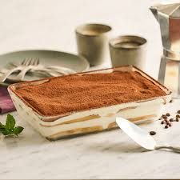
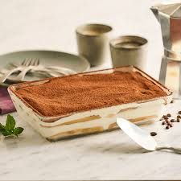

Tiramisu Recipe
Ingredients:
- 250g mascarpone cheese
- 3 eggs
- 100g sugar
- 200ml strong coffee
- 200g ladyfingers
- Cocoa powder (for dusting)
Instructions:
- Prepare the coffee and let it cool.
- Separate egg yolks and whites.
- Whisk egg yolks with sugar until creamy, then mix in mascarpone.
- Whisk egg whites separately until stiff, then fold them into the mascarpone mixture.
- Dip ladyfingers in coffee and layer them in a dish.
- Spread a layer of mascarpone mixture over the ladyfingers, then repeat.